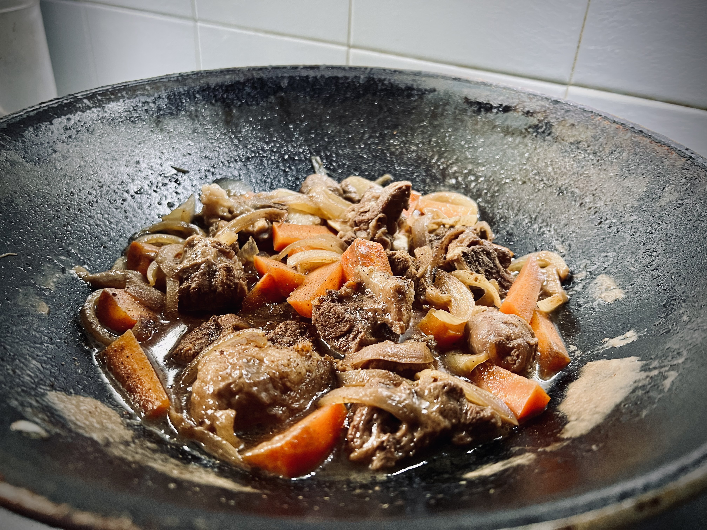
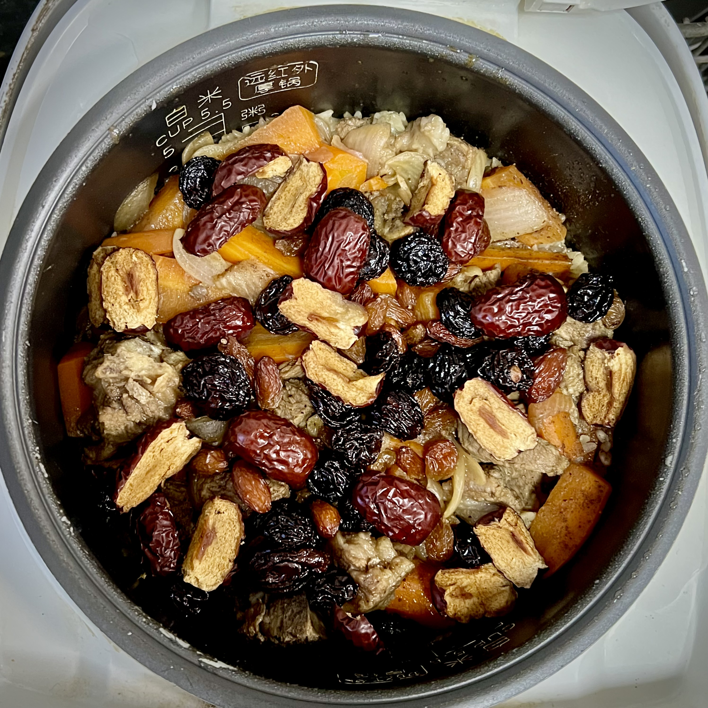
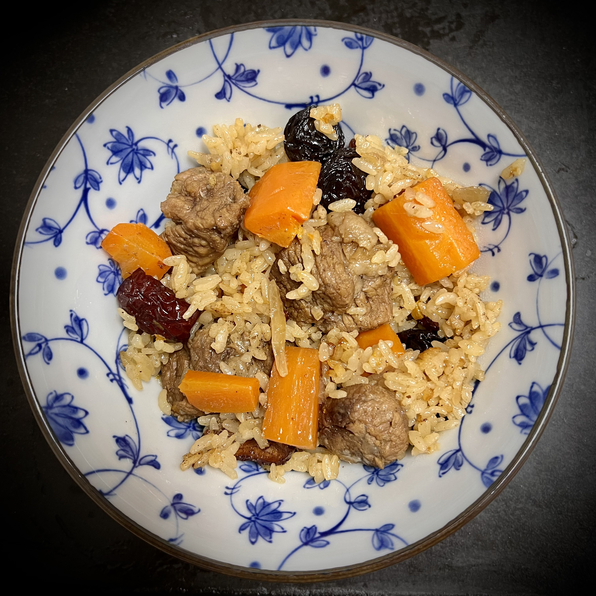
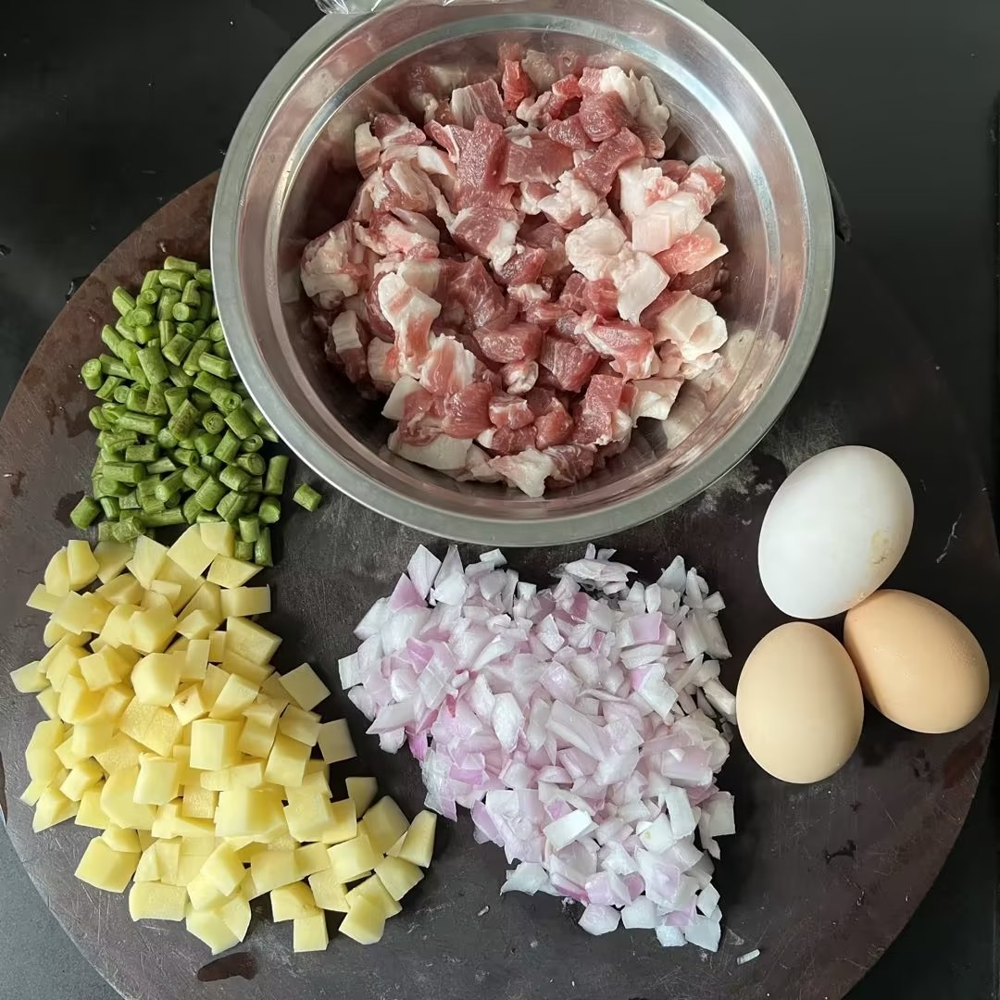
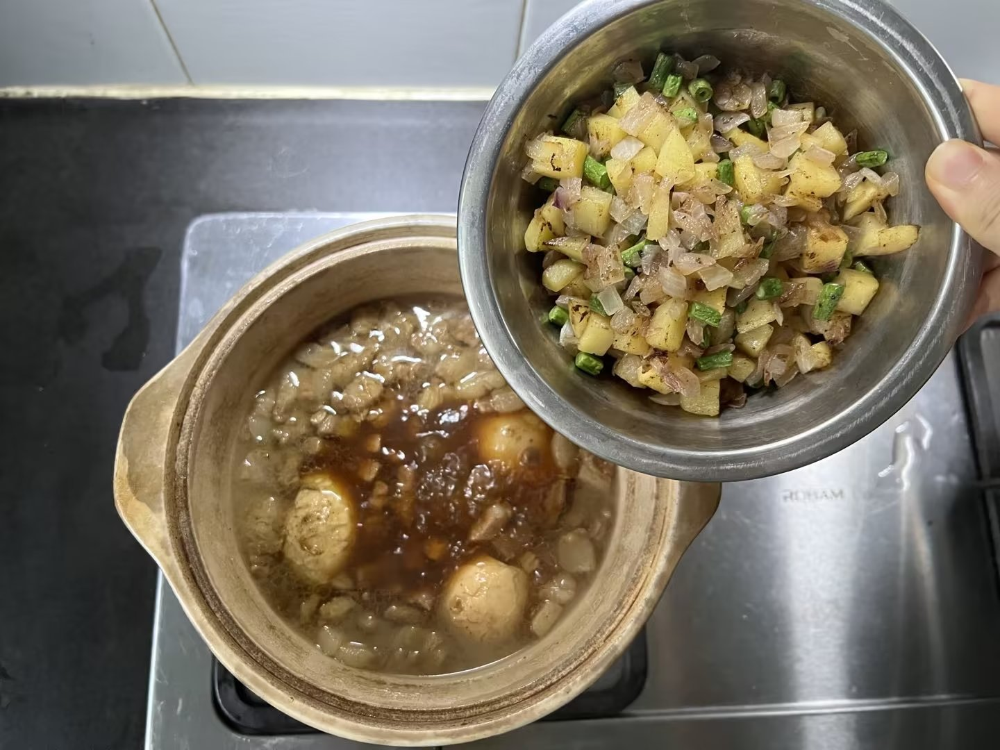
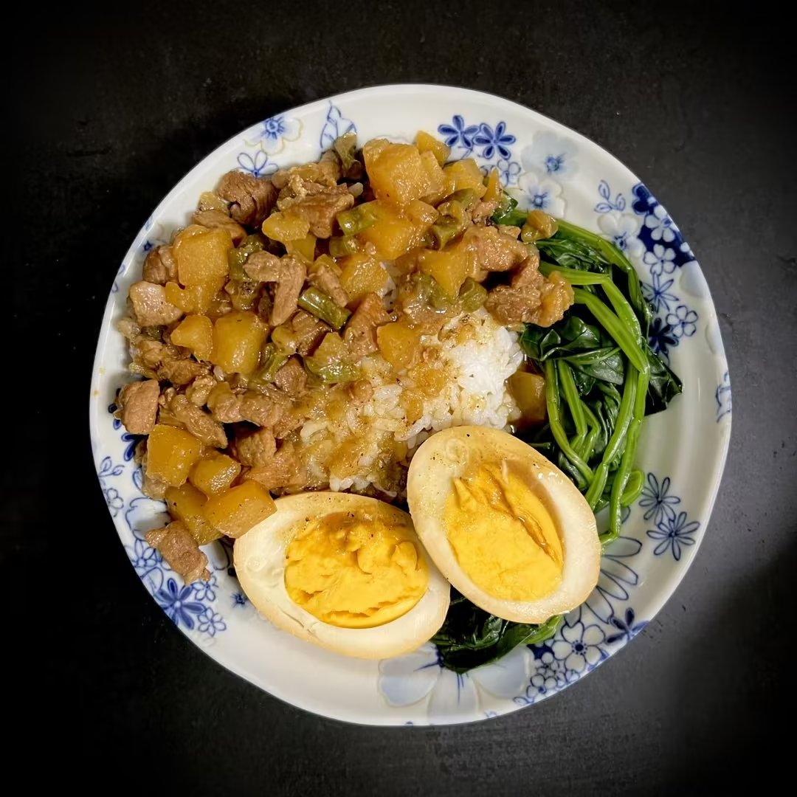

1 Lamb Pilaf
Lamb Pilaf originates from Xinjiang Province in northwestern China. In addition to lamb (typically lamb ribs, and sometimes lamb thighs), another highlight that cannot be neglected in this dish is raisins, which gives a touch of sweet to the rice as well as the meat. Carrots also contribute to part of the sweetness, since they become very soft after sufficient braising and the juice comes out.
An innovation that I made to this cuisine is the dates, whose sweetness is honey-like and distinctive from that of others. Don't worry that the dish will be too sweet, since the use of soy bean source and pepper-salt will add saline taste to the lamb, which interconnects with the sweetness and brings an exceptional delicacy.
Ingredients
- lamb (in chops) 300g
- Red Onion 1/2
- Carrot (large) 1
- Dried Red Dates 6
- Raisins 1 handful
- Cooking Wine 1 spoon
- Soy-Bean Sauce 2 spoons
- Salt and Pepper 1/4 tsp
Steps
1. Soak the lamb chops in cold water for an hour, then wash them with running water to let the blood flow away.
2. Cut the vegetables: carrot in chops and onion in slices.
3. Heat the wok until hot, then pour in some oil (about 3~4 spoons).
4. Put in the onion slices and fry until they become soft and smell good.
5. Put in the lamb chops and fry until they appear a bit brownish golden.
6. Add the carrot chops. Then add a spoon of cooking wine, two spoons of soy-bean sauce, 1/4 spoon of salt and pepper, and finally water to the surface of the ingredients.
7. Put on the lid and use medium heat to boil the water. Then turn to low heat and stew for 40 mins.
8. Put a cup of rice in the rice cooker, and add a little water to just the surface of the rice.
9. Put all the stewed ingredients into the rice cooker, and pour in some of the soup from the wok until it reaches the normal water level for a cup of rice marked in the rice cooker.
10. Add the dates (cut in halves) into the rice cooker and begin cooking.
11. Add the raisins into the rice cooker when it is about 10 mins left (i.e. when the rice cooker displays the countdown of the cooking procedure).
12. Open the rice cooker and mix the rice with ingredients. Enjoy!
2 Braised Pork with Rice
Braised Pork with Rice is a traditional Taiwan dish, and can be commonly found at many restaurants around China and even around the world. It is also not hard to replicate at home, as long as you give 2 hours to let the tasty miracle grow step by step. The basic ingredients include pork (must be streaky pork/marbled meat), red onions, and dry mushroom (available at any Chinese supermarket).
Braised Pork with Rice also have a variety of transformations. What I would like to introduce here is my own version with potato and asparagus bean, which is a good alternative choice for situations where you do not have dried mushroom at hand or if you do not like them.
Ingredients
- Streaky Pork 350g
- Red Onion 1/2
- Potato 1 medium size (around 160g)
- Asparagus Bean 3 (long strips)
- Eggs #as many as you want (usually 3 for 3 people serving size)
- Cooking Wine 1 spoon
- Crystal Sugar 30g
- Soy-Bean Sauce 3 spoons
- Oyster Sauce 2 spoon
- Multi-Flavored Natural Seasoning (in Chinese: 王守义十三香) 1 tsp
Steps
1. Cut the pork and all vegetables into dices, and soak the meat in cooking wine for half an hour. In the meanwhile, boil the eggs for about 10~12 mins and put them in cold water before peeling off the eggshell (which makes it easier to peel).
2. Heat the wok and add at least 5 spoons of oil to fry the vegetables until they become softer and smell good. Then transfer them into a bowl for future use.
3. Do not wash the wok (leave the oil there). Directly put in the meat and fry until the pork dices turn a bit golden and the oil from the fat comes out.
4. Transfer the meat into a pot and pour in water until reaching the surface of the meat. Add all the seasoning stuffs into the pot, as well as the eggs (remember to make a few shallow cuts on the surface of the egg white so that it is easier to let the juice in).
5. Put on the lid and use medium heat to boil the water. Then turn to low heat to stew for half an hour.
6. Add all the vegetables in. Continue stewing for another hour. It is now ready to be served!
7. Place some rice on the plate and pour the brased pork with sauce onto it. You can also put some greens alongside to make the dish prettier (and healthier). Do not forget to put a brased egg as well!
